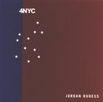

| Artist: | Jordan Rudess |
| Title: | 4NYC |
| Label: | self produced |
| Length(s): | 60 minutes |
| Year(s) of release: | 2002 |
| Month of review: | [06/2002] |
| 1) | My Thoughts | 2.10 |
| 2) | If I Could | 7.07 |
| 3) | A Step Beyond | 4.12 |
| 4) | Outcast | 4.24 |
| 5) | Lamb Chops | 2.39 |
| 6) | Within | 5.32 |
| 7) | One Voice | 3.48 |
| 8) | Real Time | 3.23 |
| 9) | Mourning After | 6.05 |
| 10) | Darkness To Day | 5.32 |
| 11) | Speed As Light | 3.34 |
| 12) | On My World | 5.56 |
| 13) | For You | 5.45 |
Outcast is a slowing moving piece with an air of David Sylvian, giving on an impression of overcast skies. Lamb Chops is a variation of Mary Had A Little Lamb. A few people in the audience recognized it, by the reactions recorded and thought it rather funny. Rudess promised to play this inpromptu at the request of his daughter and yes he chops it up nicely: the playful melody is rendered in at times aggressive piano playing, but ends with ragtime.
On Within we heard the return of the harp, while One Voice has again that Clannad feel. The song contains female choirs (on synth) and sounds quite emotional. Real Time is back to Jarrett with a bit of jazz, percussive and heavy sounding.
On Mourning After we again get a lot of harp, melodious and peacefully moving along. On Darkness To Day we get some "real" keyboards, keyboards that sound like keyboards, giving the impression of the sun rising. The harpsichordish keys that follow also spread a feeling of hope.
Speed As Light is a light piece with Latin influences, marimba and Kitaro inspired sounds. On My World is dominated by piano, and reminded me of Bruce Hornsby (but less gooey), while the closer For You is a bit in Vollenweider style with the harp returning in a sad way.